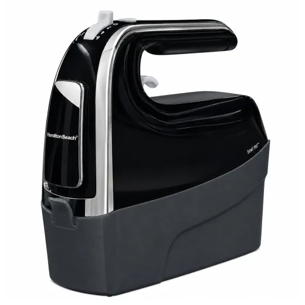
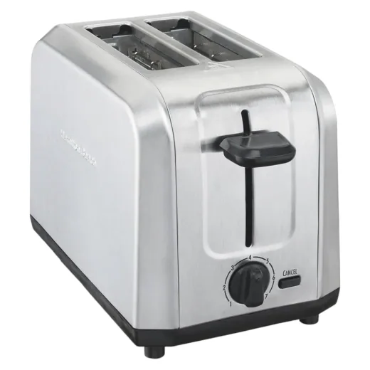

Inicio › Licuadoras y cafeteras

Hamilton Beach
Batidora de Mano Hamilton Beach de 6 Velocidades
L 795
En Walmart
Precio en cada tienda
| Tienda | Precio | Antes | Disponibilidad | |
|---|---|---|---|---|
| Walmart | L 795 | — | Disponible | Ver en tienda › |
Precios referenciales tomados de cada tienda el 21 de noviembre de 2026. El precio válido es el que muestra la tienda al comprar.
Historial de precio
Lo seguimos desde el 1 de noviembre. Precio más bajo registrado: L 795 en Walmart (1 de noviembre), igual que hoy. El precio no ha cambiado en ese tiempo.
Características
| Color | Negro y plateado |
|---|---|
| Marca | Hamilton Beach |
| Medida de altura | 22.5 cm aproximadamente |
| Medida de ancho | 8.99 cm aproximadamente |
| Medida de peso | 1.54 kg aproximadamente |
| Medida de profundidad | 23 cm aproximadamente |
| País de Origen - Ensamblaje | China |
| Material | Plástico, acero inoxidable y metal |
| Uso recomendado | Ideal para batir, mezclar, montar crema y preparar masas |
| Watts de potencia | 290 W |
| Cantidad de velocidades | 6 velocidades con función de pulso y QuickBurst |
| Fabricante | Hamilton Beach Brands, Inc. |
Descripción
La batidora de mano Hamilton Beach de 6 velocidades combina practicidad y versatilidad para acompañar distintas preparaciones en la cocina. Su diseño portátil facilita trabajar directamente sobre diferentes recipientes, permitiendo ajustar la velocidad según el tipo de mezcla y la consistencia deseada. Su formato de fácil manejo resulta conveniente para tareas como integrar ingredientes, batir y preparar mezclas de uso cotidiano. Además, su diseño favorece una experiencia cómoda durante la preparación y permite mantener el equipo a mano sin ocupar demasiado espacio. Una alternativa funcional para quienes buscan simplificar recetas caseras con un electrodoméstico práctico y fácil de incorporar a la rutina.
Información del producto: La información de este producto es proporcionada por fabricantes y distribuidores. Te recomendamos verificar las especificaciones con el fabricante para obtene
Otros licuadoras y cafeteras Hamilton Beach
 Licuadora Hamilton HB50180L 799En Elektra
Licuadora Hamilton HB50180L 799En Elektra
Hamilton Beach Tostador d Acer Inoxi 2rbL 800En Walmart Procesador D/Alimentos Hamilton B 3 TzasL 790En Diunsa
Procesador D/Alimentos Hamilton B 3 TzasL 790En Diunsa Licuadora Hamilton B. 10 Velc. 50166L 790En Diunsa
Licuadora Hamilton B. 10 Velc. 50166L 790En Diunsa Percoladora Hamilton B. 12TAZ. 49465L 790En Diunsa
Percoladora Hamilton B. 12TAZ. 49465L 790En Diunsa Cafetera Hamilton Beach 12 Tazas Negra 49316G-MXL 825En Lady Lee
Cafetera Hamilton Beach 12 Tazas Negra 49316G-MXL 825En Lady Lee Cafetera 10 Tazas NegraL 750En Lady Lee
Cafetera 10 Tazas NegraL 750En Lady Lee Tostadora 2 Rebanadas NegraL 750En Lady Lee
Tostadora 2 Rebanadas NegraL 750En Lady Lee